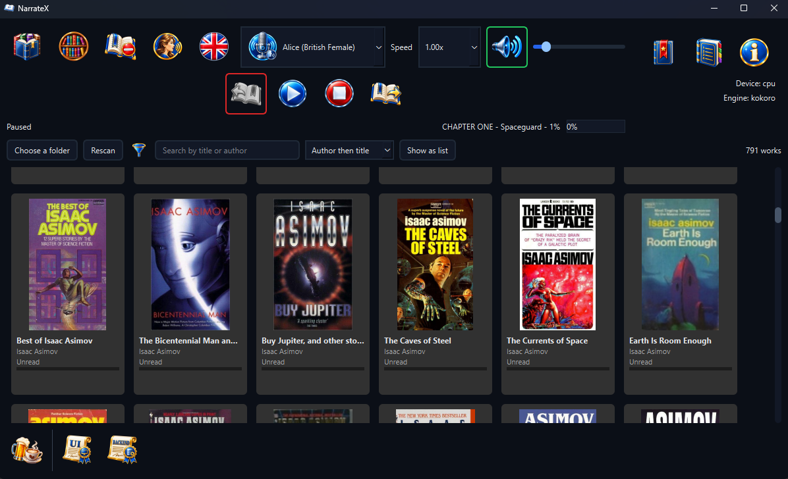
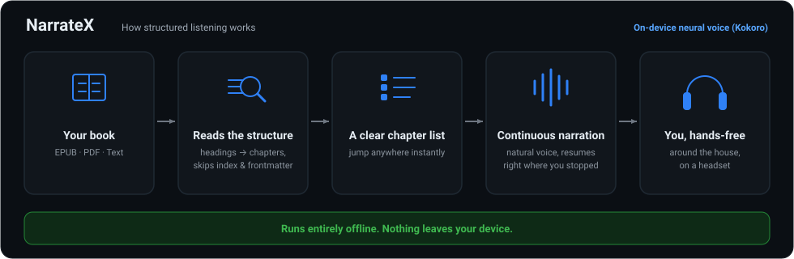

What NarrateX does, in short: how playback follows a book's structure, the shelf your books sit on, how a book becomes narration and the formats it reads. All of it runs on your own machine.
Point NarrateX at the folders holding your books and it lays them out as a grid of covers. A list is one click away, showing the title, author, genres and how far through each one you are. One click opens a book. A title you hold in two formats appears once and opens in whichever is quicker to read.
Narrow the shelf by genre, search it by title or author and order it by author, by title or by what you read most recently. Books that say nothing about their subject can be filed by hand, several at once; what you say outranks what the file says. The shelf reads your books where they sit: it never moves, renames or edits a file and never looks anything up online.


Kindle formats (MOBI, AZW, AZW3, PRC and KFX) open too when Calibre is installed, which converts them for reading. The shelf reads a Kindle file's cover, title and author directly, without Calibre.